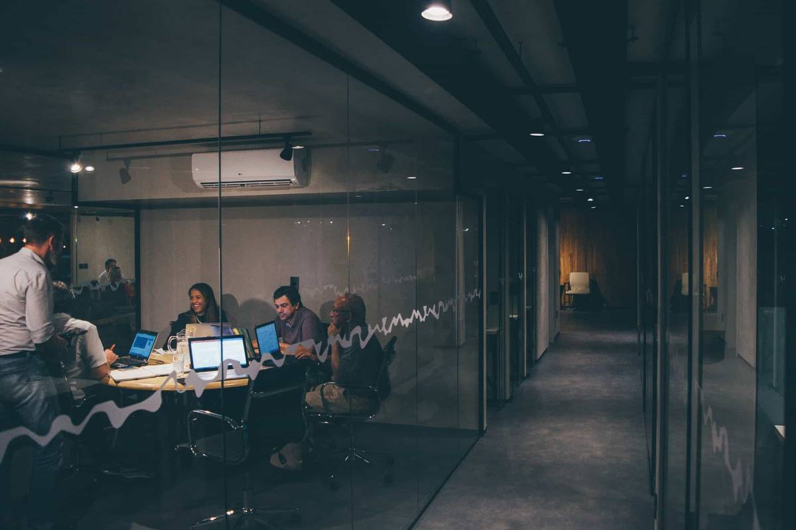

Trusted by engineering teams
From two-person startups to platform teams with hundreds of services.

“We replaced three tools with Stackpulse. Alert noise dropped by half and our status page finally updates itself.”
Nora LindgrenVP Engineering, Northbeam
“Heartbeat checks caught a silently failing backup job in the first week. That alone paid for the year.”
 Erik SolheimSRE, Parcelo
Erik SolheimSRE, Parcelo